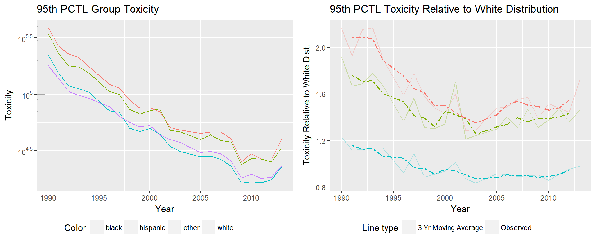
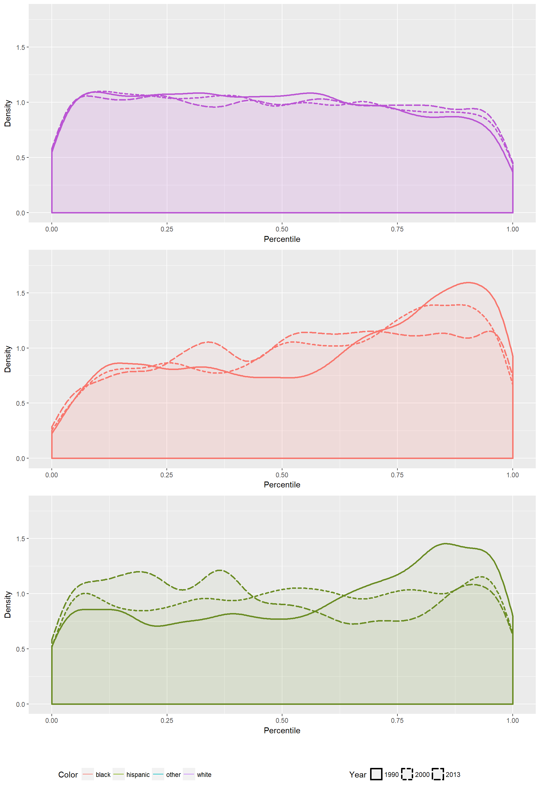
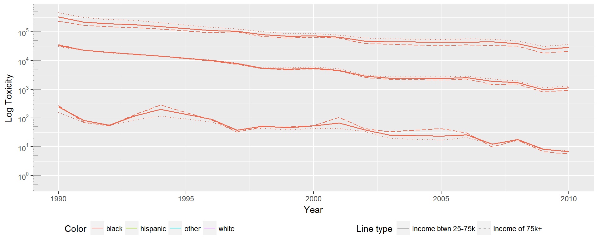
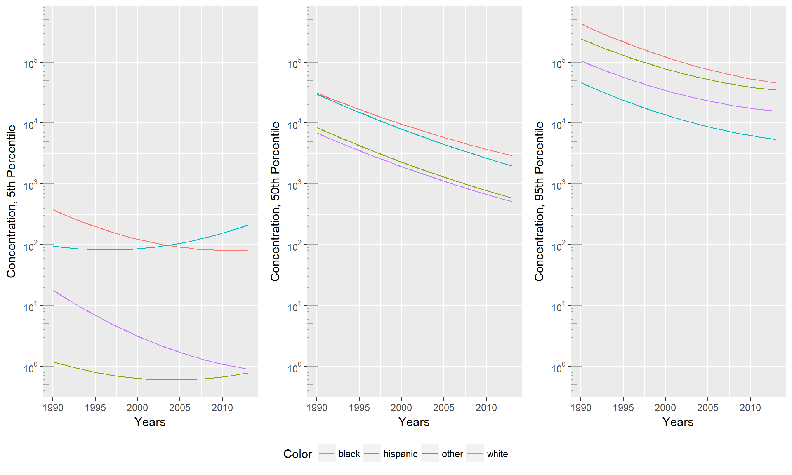

Chapter 6 Results
6.1 Trends in Minority Toxicity Burden
Using data at the tract level, we assign the average concentration across each tract to the counts of each population group in the tract. This allows us to build four distributions: toxicity for the white population, toxicity for the black population, toxicity for the Hispanic population, and toxicity for all other groups. In this case, Hispanic is not a mutually exclusive group, and the race groups may contain ethnically Hispanic individuals.
For each of the distributions, the 5th, 50th, and 95th percentiles are calculated for each year. The 5th and 95th percentiles are especially of interest, as they represent the non-polluted neighborhoods that each group has access to and the level of pollution trap that each group falls in to. Clearly, for all variables, lower toxicity is better.
Plots describing the trends for each percentile are shown below. On the left is the log toxicity for each percentile over time. On the right is the toxicity minorities experience relative to the white distribution. These values are computed as the net (not log) toxicity of the given percentile for a group divided by the net toxicity of the given percentile for the white distribution.
As we see in the 5th percentile plots, the 5th percentile of experienced toxicity is steadily decreasing for all groups. Given the y axis has been logged, and we see a linear trend, toxicity has seen an exponential drop over the years. There appear to be two distinct groups, with the black and ‘other’ groups significantly higher than the white and Hispanic groups in 1988, and even more distinctly separated by 2013. Though we see incredible improvements in toxicity for all groups, the relative improvement shows a different story. The difference for the ‘other’ minorities is most impressive, originally having 5th percentile toxicity at approximately 1.5 times the rate of the white 5th percentile, but ending at over 6 times the white 5th percentile.
From this plot we see that though minorities have had the largest net decreases in 5th percentile toxicity, those gains are due to how much higher their original toxicity was. When framing improvements relative to the white population, there has been no improvement, in some cases relative toxicity has regressed.

The toxicity changes for the 50th percentile tell a very different story. Again, we see linear improvement in the logged toxicity plot, indicating an exponential decrease in the toxicity experienced by the 50th percentile of all populations. At the 50th percentile minority groups have improved faster than their white counterparts, meaning that the relative toxicity of all groups is converging towards the 50th percentile of the white distribution.

95th percentile toxicity is of the most of interest. The difference between estimates for white and minorities is at the level of orders of magnitude at the 5th, 50th, and 95th percentiles, but at the 95th percentile an order of magnitude is more significant than in the 5th percentile. An interesting difference is that at the high end of the distribution, we see the ‘other’ minority group has a relative toxicity close to 1, where in previous plots the other group had significantly worse relative toxicity. It’s important to consider that race groups had to be combined to maintain consistency over the time period, meaning many groups are represented in the ‘other’ category. The difference we see in the trends may be due to the populations that are more likely to live in areas at the 95th percentile of toxicity because we are following trends of different groups. The Hispanic group previously performed closest to the white group, at the 95th percentile the Hispanic group performs more similarly to the black distribution.
Examining the changes in each of these plots independently gives us a glimpse at how the distributions as a whole are shifting. The lack of change, or even worsening, of relative toxicity for the black and other distributions at the 5th percentile may be indicative of barriers minorities face in access to clean communities. As wealthier communities are getting ever cleaner, minorities may still unable to gain access to them, meaning less improvement in the low tail of the minority distributions.
Comparatively, the changes at the 50th percentile show that minorities have all consistently improved faster than the white 50th percentile.
In the 95th percentile, we see the ‘other’ group performing similarly to the white distribution, while the black and Hispanic distributions improve until the early 2000’s, and then flatten out or rise relative to the white distribution. We are seeing a widening gap in the 5th percentile, a closing gap in the 50th percentile, and stagnation of change in the 95th.
6.2 Trends in Simulated Minority Toxicity Burden
Being able to build the distributions of toxicity that each group experiences over time allows us to see how relative toxicity burden has changed over time. Yet the changes presented above are the net changes experienced by each group. Given minorities are more likely to be in the right tail of the distribution, any compression of that tail would result in both a net improvement for minority groups and a relative improvement to the white distribution. Those changes, though positive, don’t represent a true change in the position minorities hold in the distribution, as their relative position is still in the high percentiles of the distribution.
To find how much of the change is attributable to changes of minority position, we use the simulation method discussed in Section 3. By holding the percentile of each individual constant, but applying it to the overall distribution in a later year, we can see what the minority distribution would have looked like if the minority position within the overall distribution had not changed.
Improvement will only represent justice when all groups are equally likely to be represented at any given percentile, not when the distribution is compressed enough that differences are small.

The 5th percentile of the simulated black distribution is significantly higher than that of the true black distribution, rising to approximately 12 times that of the white distribution. This means that more black individuals were able to move to locations with lower toxicity or had dramatic improvements in neighborhood toxicity. If they had maintained their position in the overall distribution, they would have experienced significantly higher toxicities. Interestingly, the opposite is true for the ‘other’ distribution. Their true 5th percentile has significantly worse toxicity than their simulated 5th percentile. This indicates that non-black minorities at the low end of the distribution hold worse places in the overall distribution than they did in 1990.

Changes at the 50th percentile were impressive in the initial analysis, and remain that way. The simulated distributions still show improvement, but very minor compared to the observed improvement. The simulated black 50th percentile drops from 3 times to 2.75 times the white 50th percentile, where the true distribution drops from 3 times to 1.5 times the white distribution. All the simulations show the same pattern, with the Hispanic group showing the largest difference between true and simulated 50th percentile, the simulated group ending at 2.25 times the white distribution, and the true group ending at 0.75 times the white distribution.
Interpreting the differences in simulated and true values as the portion of change attributable to the position each group holds in the overall distribution, it seems that there has been change in the positions minorities hold in the overall toxicity distribution.

Simulations of the 95th percentile show even less improvement, meaning nearly all the change minorities experience is from moving towards a lower percentile in the overall distribution. At the 95th percentile the black distribution shows the largest difference to it’s simulated distribution. The simulated black 95th percentile ends at 2.25 times that of the white distribution, while the observed black 95th percentile ends at 1.75 times that of the white distribution.
From this we see that the distribution of percentiles occupied by minority groups was originally shifted towards the higher percentiles, but over time have shifted right. Plotting the percentiles of each group within their full distribution that year, we see that in 1990 all minority groups are strongly skewed towards the higher end of the distribution. As time goes on, more minorities exist in the lower percentiles, and more whites exist in the higher percentiles of the distribution.

6.3 Interacting Risk Cases
Above we have seen the differing experiences of changing toxicities by race. We find that toxicity is significantly improving for all, but relative improvement has begun to stagnate for minority groups at some levels. This begs the question of what the trends are for individuals with interacting risk cases. Given the multifaceted social identities individuals hold, any single metric will be missing part of the pattern. Ideally we would be able to represent the complex power structures and dynamic social categorizations in our society, but with limited data, and the inherent complexity of the problem, we can begin to broach this problem by looking at the intersection of two commonly discussed risk groups. In this case we examine how the trends of experienced toxicity vary for each race group when considering income levels.
To do so we split households in to low income (under 25,000), medium (between 25,000 and 75,000), and high income (over 75,000).
First we examine How the 5th, 50th and 95th percentiles differ for the black distribution. Dotted lines represent the low income group, solid lines represent the medium income group, and dashed lines represent the high income group. In this case the 50th and 95th percentile act as would be expected, with the high income group experiencing lower toxicity across the board. However, the 5th percentile shows the inverse pattern, with high income households experiencing higher toxicity. One reason this could be true is that high income individuals may be more likely to live in the more toxic suburban or urban areas, rather than rural areas.

In the white population we see a similar pattern. The 95th percentile continues to show the expected behavior at the 95th percentile, but in both the 50th and 5th percentiles the high income group has a significantly higher toxicity.

The Hispanic group shows exactly the opposite pattern of the white distribution, with the high income distribution experiencing higher toxicity in the 50th and 95th percentiles, and lower toxicity in the 5th percentile. In the 50th and 95th percentile, the differences between toxicities experienced by each income group are minimal. The 5th percentile, however, shows significantly lower toxicities experienced by the high income group.

Interestingly, the group with the largest differences between high and low income across all percentile groups appears to be the white distribution. This may indicate that housing discrimination and neighborhood sorting may be relevant areas to study. Given the rational sociopolitical reasons theorized for environmental justice origins, it may be that income is less predictive for minorities due to reduced choice in housing locations, meaning that even given the economic viability of escaping toxicity is less feasible.

Seeing these results together we find they aren’t internally consistent, and do not follow the expected pattern. As hypothesized in discussion of the black distributions, it may be that there are confounding factors that aren’t being addressed. Intersectionality requires a more complex view of identities as explanation of lived experiences, and these factors do not appear to be enough to understand the underlying patterns. Potential confounding areas to explore include: population density, geographic area, prevalence of local manufacturing jobs, level of political engagement, and education levels.
6.4 Exploration of Quantile Regression
Previous sections have focused on teasing apart patterns in the vast amounts of data we have. We find large differences in the toxicity experienced, but may be limited by the choices in division we make. Given we only investigate income as a relevant variable, there are likely patterns in the data that aren’t being examined.
In order to better tease out relationships in the data, and for easy interpretation of coefficients, a functionally similar analysis can be done with quantile regression, focusing on the computed parameters as indicators of the differences in experienced toxicity.
To illustrate the form this model could take, we build preliminary quantile regression models (???) on the 5th, 50th, and 95th percentiles of the toxicity distribution. To predict log toxicity, we use the year, demographic information, population density and quadratic terms. This model operates on a tract level, using percentage of each population group, population density, and would ideally also include variables like unemployment rates, percentage renters, etc.
The predictions shown for each race or ethnicity group are fairly consistent with the results shown above. The distinct separation between the white and Hispanic distributions as compared to the black and ‘other’ distributions is mirrored in the model predictions. The model appears to follow the observed patterns fairly well, aside from a strange fit for the ‘other’ distribution in the 5th percentile.

By adding additional block level data to this regression, we may be able to discuss the magnitude of toxicity differences that are actually attributable to race, and will be informed on the other factors that hold importance in predicting toxicity. Above sections address the empirical reduction in toxicity and the reduction amount attributable to shifts of minority placement in the distribution. An approach able to take it a step further and find the differences attributable to race would add significant value.